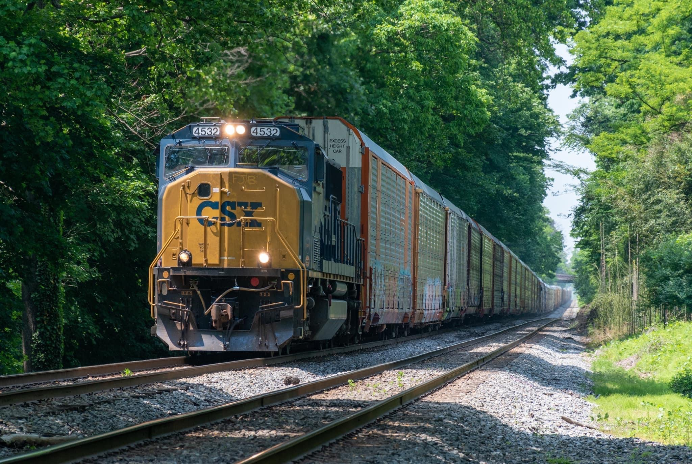

Electro-Motive Division General Purpose Series
The EMD GP (General Purpose) Locomotives are four axle road switchers that saw a production run from 1949 to 2001. The Geeps as they are lovingly refered to by railfans are typically seen working in switching yards and providing power on local frieghts. Geeps are identified by their short car body and four axle trucks. GP units that feature orange strobe lights on the cab roof mean that those locomotives can be remotely controlled.
The GP38-2 is one of the most popular and successful of the General Purpose series. identified by having 2 radiator fans on the back and one up front, the GP38-2 was produced between 1972 to 1986 and features a 2,000 horsepower engine.
The GP38-3 features EMD's new box-cab commonly refered to by railfans as the "sponge bob" cab. This is the only visual difference between the -2 and -3 GP38's.
The GP40-2 was in production from 1972 to 1986, and is rated at 3000 horsepower. It is distingushed from its smaller brother the GP38 by its three radiator fans on the rear of the locomotive.
Watch the GP40-2 in action while working a local switching job.

Just like the GP38-3, the GP40-3 also features the new EMD box-cab and more advanced electronics.
Electro-Motive Division Special Duty Series
The Electro-Motive Division Special Duty (SD) series was EMD's main road power for frieght trains for the longest time. The SD's are differentiated from the GP's by having 6 axle trucks and longer car body. The SD's have been overshadowed by the General Electric locomotives in recent times, but have since made a small comeback. CSX carries two classes of SD series locomotives, the SD40 and the SD70 series.
The SD40-2 is a rebuild version of the venerable SD40 locomotive. The SD40-2 features advanced electronics systems and also remote control for yard work. You will sometimes see the old SD40's on local frieghts and sometimes trailing on road frieghts. These units have been in service since the 70's and with many upgrades are still going strong.
The EMD SD40-3 is identical to the -2 with the exception of the -3 having the EMD box-cab. These new cabs were introduced in 2010 and feature better crash ratings, new heating and air-conditioning systems, a new control stand, including visual displays, a more modern braking controller, and modernized starting systems. Both SD40 variants have 3000 horsepower.
The EMD SD70MAC is the AC (alternating current) traction motor version of the SD70M both built in 1992. The SD70MAC is the direct competition to the General Electric Dash9-44CW. The SD70MAC has 4000 horsepower and can still be seen pulling trains to this day.

The EMD SD70MAC with the flared radiators on the longhood, known as the "Flared MAC" by railfans, are suped-up versions of the standard SD70MAC with 4300 horsepower and AC traction motors. The flared MACs are also direct competitors with the GE Dash9-44CW.

The EMD SD70ACe known to CSX as the ST70AH, is CSX's answer to the GE Evolution series. The ACe as it's known, meets the new tier four emmission standards set by the EPA and is one of the cleanest burning locomotives out there. The SD70ACe-T4 as it's officially known, was first produced in 2015 and has 4400 horsepower. The ACe has all new internal systems from the older MAC's on CSX's roster and is easily identifiable by its large flared radiator and cut nose style widecab.
Catch some ST70AH's (SD70ACe) in action below!